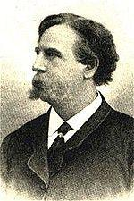

1 It came upon the midnight clear,
that glorious song of old,
from angels bending near the earth
to touch their harps of gold:
"Peace on the earth, good will to men,
from heaven's all-gracious King."
The world in solemn stillness lay,
to hear the angels sing.
2 Still through the cloven skies they come
with peaceful wings unfurled,
and still their heavenly music floats
o'er all the weary world;
above its sad and lowly plains,
they bend on hovering wing,
and ever o'er its Babel sounds
the blessed angels sing.
3 And ye, beneath life's crushing load,
whose forms are bending low,
who toil along the climbing way
with painful steps and slow,
look now! for glad and golden hours
come swiftly on the wing.
O rest beside the weary road,
and hear the angels sing!
4 For lo! the days are hastening on,
by prophet seen of old,
when with the ever-circling years
shall come the time foretold
when peace shall over all the earth
its ancient splendors fling,
and the whole world send back the song
which now the angels sing.
作詞者塞阿斯（Edmund H. Sears,
1810-1876），初學律法想當律師，不久即轉讀神學，1837年畢業於哈佛神學院。他沒有往大都會求職以成為顯赫人物為目標，而是選擇在寧靜的、被捨棄的鄉村牧會。他不僅是牧師、傳教師，也是有才能的著作家、編輯和聖詩作者。他的語言文字富有詩韻的風格，能激發人高度屬靈的思想，作品兼具學術價值。哈佛母校於1871年贈他神學博士學位。
One theme of this hymn is the contrast between the message “peace on earth, good
will toward men” proclaimed by the host of angels at Christ's birth (Luke 2:14)
and the war and oppression that dominate the earth. As this hymn is sung, think
about the coming time when God will make all things new and bring His peace.
Text:
Edmund H. Sears, a Unitarian minister at Wayland, Massachusetts, wrote this hymn
in 1849. It was published that year a few days after Christmas in the Boston Christian
Register. While obviously a Christmas hymn due to its theme of the angels'
song, there is no mention at all of Christ or His birth about which the angels
sang; it is a social gospel hymn. Perhaps this is due to the theological
leanings of its author, even though Sears believed in the divinity of Christ,
contrary to most Unitarians. Written only a dozen years before the outbreak of
the American Civil War, the peaceable leanings of the Unitarian school of
thought are evident in the text.
Originally written in five stanzas, this hymn is usually published with four.
The third stanza (beginning “Yet with the woes”) is most commonly omitted, and
the fourth (beginning “And ye, beneath life's crushing load”) is next most
common. The first and second stanzas (“It came upon the midnight clear” and
“Still through the cloven skies they come”) describe the coming of the angels
and their song. The third condemns war, and the fourth commiserates with those
in bondage and trial. The fifth stanza (“For lo! the days are hastening on”)
describes a future time of peace.
Tune:
CAROL is the most common tune to which this hymn is sung. It comes from the
twenty-third study in Church Chorals and Choir Studies of 1850 by
Richard Willis. The composer later arranged the tune into its present form for
the Christmas text “While Shepherds Watched Their Flocks.” CAROL was first
paired with “It Came Upon a Midnight Clear” in 1878.

This tune may be sung in harmony, or in unison. The accompaniment should be
legato, and an additional instrument such as a flute or violin would work well.
When/Why/How:
This hymn is suitable for the Christmas season. Such a well-known hymn can be
used in a variety of ways. Settings of CAROL suitable for prelude, offertory, or
postlude can be found in collections such as “Christmas
Comes Again, Set 2” for organ or “Christmas
Carols at the Piano.” A flexible medley for four-hands piano with three
other well-known carols is part of “A
Season of Joy.”“The
Midnight Clear” is a setting of Sears's text to original music by Joel Raney
suitable for a choral anthem. The accompaniment can be expanded beyond the
flowing piano part with parts for optional flute, oboe, cello, and handbells.
The collection “Tis
the Season” contains a descant and congregational setting of this hymn.
Another congregational setting of “It
Came Upon the Midnight Clear” includes a trumpet descant.
"It Came Upon the Midnight Clear",
sometimes rendered as "It Came Upon a Midnight Clear", is an 1849
poem and Christmascarol written
by Edmund
Sears, pastor of the Unitarian
Church in Wayland, Massachusetts.
In 1850, Sears' lyrics were set to "Carol", a tune written for the poem
the same year at his request, by Richard
Storrs Willis. This pairing remains the most popular in the United
States, while in Commonwealth
countries, the lyrics are set to "Noel", a later adaptation by Arthur
Sullivan from an English melody.
Sears served the Unitarian congregation in Wayland,
Massachusetts, before moving on to a larger congregation in Lancaster.
After seven years of hard work, he suffered a breakdown and returned to
Wayland. He wrote It Came Upon the Midnight Clear while serving as
a part-time preacher in Wayland.[2] Writing
during a period of personal melancholy, and with news of revolution in
Europe and the United States' war with Mexico fresh in his mind, Sears
portrayed the world as dark, full of "sin and strife", and not hearing the
Christmas message.[3]
Sears is said to have written these words at
the request of his friend, William Parsons Lunt, pastor of United
First Parish Church, Quincy,
Massachusetts, for Lunt's Sunday school.[1] One
account says the carol was first performed by parishioners gathered in
Sears' home on Christmas Eve, but to what tune the carol was sung is
unknown as Willis' familiar melody was not written until the following
year.[2]
According to Ken Sawyer, Sears' song is
remarkable for its focus not on Bethlehem, but on his own time, and on the
contemporary issue of war and peace. Written in 1849, it has long been
assumed to be Sears' response to the just ended Mexican–American
War.[2] The
song has been included in many of the Christmas albums recorded by
numerous singers in the modern era.
In Commonwealth countries, the tune called
"Noel", which was adapted from an English melody in 1874 by Arthur
Sullivan, is the usual accompaniment. This tune also appears as an
alternative in The
Hymnal 1982, the hymnal of
the United States Episcopal
Church.[7]
The full song comprises five stanzas. Some
versions, including the United
Methodist Hymnal[4] and Lutheran
Book of Worship,[5] omit
verse three, while others (including The Hymnal 1982) omit verse
four.[8] Several
variations also exist to Sears' original lyrics.
"It Came Upon a Midnight Clear" Edmund H. Sears The United Methodist Hymnal, No. 218
Edmund H. Sears
“It came upon a midnight clear, That glorious song of old, From angels bending near the earth, To touch their harps of gold: ‘Peace on the earth, good will to men, From heaven’s all-gracious King.’ The world in solemn stillness lay, To hear the angels sing.”
This may be the only commonly sung Christmas carol in our hymnals that
does not mention the birth of Christ! The focus is rather on the song of the
angels, “Peace on the earth, good will to men,” taken from Luke 2:14.
The historical context sheds some light. Massachusetts native Edmund
Hamilton Sears (1810-1876) earned a degree from Harvard Divinity School and was
ordained a Unitarian minister in 1839, serving congregations throughout
Massachusetts.
As UM Hymnal editor Carlton Young puts it so well, the “hymn’s central
theme contrasts the scourge of war with the song of the angels’ ‘peace to God’s
people on earth.’” He observes that this is one of the earliest social gospel
hymns written in the U.S.
The movement gathered strength as the 20th century approached, influenced
by the writings of Walter Rauschenbusch (1861-1918) and hymns such as Washington
Gladden’s “O Master, let me walk with thee” (1879) and Frank Mason North’s
“Where cross the crowded ways of life” (1903).
Sears’ context was the social strife that plagued the country as the
Civil War approached. This hymn comes from a Boston publication, Christian
Register, published on Dec. 29, 1849. The original stanza three, missing from
our hymnals, sheds light on the poet’s concerns about the social situation in
the U.S. in the mid-19th century:
“But with the woes of sin and strife The world has suffered long; Beneath the angel-strain have rolled Two thousand years of wrong; And man, at war with man, hears not The love-song, which they bring: O hush the noise, ye men of strife, And hear the angels sing!”
The current stanza three in The United Methodist Hymnal poignantly
articulates the situation of so many with images of those “beneath life’s
crushing load, whose forms are bending low, who toil along the climbing way with
painful steps and slow....” The second half of this stanza offers hope that the
song of the “blessed angels” who “bend on hovering wings” would soothe the
“Babel sounds” of a suffering world.
Sears, though a Unitarian, wrote in Sermons and Songs of the
Christian Life (1875), “Although I was educated in the Unitarian denomination, I
believe and preach the Divinity of Christ.” He authored books quite popular in
his day, including Athanasia, or Foregleams of Immortality (1857) and The Fourth
Gospel, the Heart of Christ (1872).
Sears was co-editor of the Monthly Religious Magazine, where most of his
hymns were first published. John Julian, editor of the Dictionary of Hymnology,
an important British reference work at the turn of the 20th century, offers high
praise for Sears’ two Christmas hymns (the other being the lesser-known “Calm on
the listening ear of night”), calling them some of the best in the English
language.
British hymnals prefer the tune NOEL by Sir Arthur Sullivan (1842-1906)
for this hymn, but hymnals in the U.S. overwhelmingly prefer CAROL by Richard
Storrs Willis (1819-1900). The tune appeared with other texts as early as 1850
and was first joined with Sears’ poem in the Methodist Hymnal (1878).
It is right that we should joyfully sing “Hark! the herald angels sing”
and “Joy to the world” each Christmas season. But always there are moments when
we realize the message of peace has not yet been fully realized on earth. Then
we sing “It came upon the midnight clear,” and the power of the Incarnation and
the message of the gospel touch us even more deeply.
Dr. Hawn is professor of sacred music at Perkins School of Theology.
Unitarian minister Edmund Hamilton Sears wrote his carol, The
Angel’s Song –It Came Upon the Midnight Clear, from the well
springs of his profound faith in God and the belief that through
the centuries God sends his emissary angels to earth with a
resounding message of peace. He also wrote his carol while
recovering from a devastating illness and from the depths of
profound despair. In 1849, when Reverend Sears wrote his carol,
the United States still reeled from the aftermath of the Mexican
War and the burning issue of slavery that in another decade
would ignite the Civil War. Europe reverberated with
revolutions, and people all over the world warred with
themselves and each other. No one seemed to be listening to
angel’s songs of peace.
It’s unlikely that Reverend Sears thought of his song as a carol
or that his contemporaries considered it to be a carol – at
least not at first. Traditionally carols were defined as
celebrating a seasonal topic and they featured alternating
verses and chorus and music suitable for dancing. From the 1150s
to the 1350s, carols were popular as dance songs and gradually
their role expanded to processional songs that people sang
during festivals. People also used carols to accompany religious
mystery plays. Carol singing declined after the Protestant
Reformation because Calvinists disliked what they considered
“nonessential” practices connected with Roman Catholicism.
When Reverend Sears wrote The Angel’s Song in 1849, carols were
just beginning a nineteenth century revival as famous composers
began to write new and contemporary versions of their ancient
forms and It Came Upon The Midnight Clear was one of the first
of these new carols.
Farm Boy Edmund Sears Acquires an Education and Becomes a
Minister
Like carols and carol singing and dancing, Reverend Sears was
experiencing renaissance in his own life when he wrote The
Angel’s Song. Born April 6, 1810, on a farm in Sandisfield, a
town in western Massachusetts within sight of the Berkshire
Hills, Edmund Hamilton Sears was the youngest of three sons of
Joseph and Lucy Smith Sears. As a child, Edmund loved the
Berkshire hills near his farm and later told friend and
colleague Chandler Robbins that he imagined the hilltops touched
heaven and that angel messengers rested on the hilltops between
heaven and earth on their errands of love. Edmund’s father
Joseph taught him to appreciate poetry and later Edmund wrote
that as a child he often did his chores with snatches of poetry
running through his head.
Both his father Joseph and mother Lucy taught Edmund the
importance of moral principles and encouraged his love of study.
Although farm work prevented Edmund from regularly attending
school, he advanced in his studies enough to be admitted as a
sophomore at Union College in Schenectady, New York in 1831, and
he won a prize for his poetry while he studied there. He
graduated from Union College in 1834 and studied law for nine
months with a lawyer in Sandisfield. After teaching briefly at
Brattleboro Vermont Academy, Edmund studied for the ministry
under Addison Brown, who was the minister of the Brattleboro
Unitarian Church. Edmund became so fascinated with the writings
of Boston ministers William Ellery Channing and Henry Ware that
he enrolled at the Theological School in Cambridge,
Massachusetts, graduating in 1837.
The American Unitarian Association supported his work as a
missionary in a frontier area around Toledo, Ohio and in 1838,
he served at the First Congregational Church and Society in
Wayland, Massachusetts where his congregation was so impressed
by his character and preaching that they called him to settle
permanently with them. The church ordained and installed him as
a minister in February 1839. While Edmund practiced his student
preaching in Barnstable, Massachusetts, he met Ellen Bacon and
they were married in 1839. Since he didn’t have ambitions for a
large city pulpit, Reverend Sears and his wife settled down for
a quiet country life in Wayland.
As his family gradually grew to four children, Reverend Sears
discovered that he needed a larger, richer church to support his
family and between 1840-1847 he served a Congregational Church
in Lancaster. In Lancaster, he suffered illness and depression
and his condition grew so severe that he couldn’t project his
preaching voice loud enough for a large congregation to hear or
endure the physical work required to sustain a large
congregation.
Reverend Sears returned to Wayland for a year to rest and
recover and when his health improved the Wayland congregation
recalled him and he served there from 1848-1865, the year he
retired. His lighter workload allowed him more time to write,
and from 1859 to 1871 he served as the editor of The Monthly
Religious Magazine. He contributed articles and poems to several
magazines and wrote theology books.
Reverend Sears Writes Theology Books
Contemporary ministers considered Reverend Edmund Sears as what
they termed conservative and not sympathetic with broad church
or radical Unitarians and ironically, his theological writings
influenced both Unitarian and non-Unitarian liberals. In his
writing, Reverend Sears expressed both idealism and pessimism
about the human condition, explored human nature and the path to
salvation. In his 1853 book Regeneration, he rejected the
doctrine of original sin, but disagreed with some Unitarians
about the perfectibility of human nature. Yet, he wrote that
people are fashioned in God’s image and can develop their
spiritual nature.
Although some 21st century Christians brand It Came Upon The
Midnight Clear a “humanist” carol, the theology of Reverend
Edmund Sears centered intensely on Christ. He believed that
Christ was fully human and fully divine and the mediator between
God and man. He also believed that God reaches down to humanity
through his Son and angels, but his Peace depends on a human
response. Lydia Maria Child, novelist, Abolitionist and women’s
rights activist, who wrote her own famous song, Over the River
and Through the Woods, also lived in Wayland and sometimes
attended Unitarian services and critiqued her friend Edmund’s
sermons. Although she wrote that he didn’t have the reforming
temperament, she said that Reverend Sears did have the courage
to stand up for his beliefs, even if they were controversial
like his belief in male and female equality.
When the 1850 Fugitive Slave Law became enforced nationwide,
Reverend Sears announced from his pulpit that when human and
divine law conflicted, people must obey the Divine law. In his
1856 sermon Revolution or Reform, he declared slavery
a crime and predicted that continued and unrepentant slavery of
it would reap national retribution.
Reverend Sears Writes Hymns and Carols
In 1834, student Edmund Sears wrote a Christmas carol that he
titled Calm on the Listening Ear of Night, describing the
angel’s anthem resounding across the silent Palestine hills and
plains. Many American hymnals printed his first carol, but his
second carol, The Angel’s Song- It Came Upon the Midnight Clear,
became more popular. In this carol, Reverend Sears describes an
angel chorus singing God’s message of peace on the earth, good
will to men, but their songs fall on heedless humanity so
immersed in wars and strife that they can’t hear the angel songs
or God’s message of peace. Reverend Sears is tellingly
contemporary in his third verse:
Yet, with the woes of sin and strife the world has suffered
long; Beneath the angel strain have rolled two thousand years of
wrong; And man, at war with man, hears not the love song which
they bring; O hush the noise, ye men of strife and hear the
angels sing. In the last verse of his carol, Reverend Sears
envisions a future where peace would reign over the earth and
humanity would send back the song of peace that the angels have
sung in vain for so many centuries. Besides his two carols, he
wrote between 40 and 50 hymns.
It Came Upon the Midnight Clear is Controversial
A controversial minister among the Unitarians, the carol that
Reverend Sears wrote It Came Upon the Midnight Clear, provoked
controversy as well. Some accounts say that his parishioners
first performed his carol when they gathered at his home to
celebrate Christmas Eve. Other accounts say that he wrote his
carol for the Unitarian Sunday school in Quincy, Massachusetts.
In December 1849, Reverend Dr. Morrison, editor of the Christian
Register, first received the poem and liked it so well that he
used it in several Christmas programs. He published it in his
magazine, The Christian Register in December 1850. No one knows
what tune the first singers used to perform It Came Upon The
Midnight Clear, because New York organist Richard Storrs Willis
who had studied music with Felix Mendelssohn in Germany, didn’t
adapt the words of Reverend Sears to a tune that he wrote that
he called Carol, until about a decade after Reverend Sears first
published the poem in 1849. Carol, the tune that Richard Willis
wrote, became the most popular tune to sing to It Came Upon The
Midnight Clear, but in 1874, in England composer Arthur Sullivan
set the poem to a different tune that he called Noel. The carol
is widely sung in England and popular in the United States.
When the Civil War ended, Reverend Sears resigned his pastorate
in Wayland to write full time, but he accepted a call to succeed
Joseph Field at a church in Weston, Massachusetts in 1866. In
1873, Reverend Sears enjoyed a European tour. In 1874, he fell
from a tree while working in his garden and spent the next two
years in constant pain. He died on January 16, 1876, from his
injuries, but his angel carol is still sung over a century after
his death.
It Came Upon the Midnight Clear is as contemporary as a computer
because instead of focusing on Bethlehem, it unites the time
that Reverend Sears wrote it, the 19th century, with sadly still
contemporary issues of war and peace. His poem spells out a call
for peace and goodwill that echoes as “solemnly and stilly” and
some would say futilely as the call that resounded in his time.
Some Christians contend that because the “angel song” doesn’t
mention Jesus, it should be removed from denominational
hymnbooks and others have rewritten the words to include Jesus.
British carol scholar Erik Routley wrote that “in its original
form the hymn is little more than an ethical song extolling the
worth and splendor of peace among men.” Others appreciate the
original carol for its language, images, and expression of angel
and human centuries old hopes of peace and consider it a message
from “Heaven’s All Gracious King.”
Further Reading Dictionary of Unitarian and Universalist
Biography
Wayland Historical Society Andover-Harvard Theological Library,
Cambridge, Massachusetts Hymnary, Reverend Edmund Sears Erik
Routley, Erik. University Carol Book.Brighton: H. Freeman & Co.,
1961.
Chandler Robbins, "Memoir of Rev. Edmund Hamilton Sears,"
Proceedings of the Massachusetts Historical Society (1891);
Books by Reverend Edmund Sears
The Pilgrim, 1857
Pictures of the Olden Time, 1857 Hindrances to a Successful
Ministry, 1858
Christian Lyrics, 1860
The Town of Wayland in the Civil War of 1861-1865 Christian
Life, 1875
Sermons and Songs of the Christian Life, 1875
Christ in the Life, 1877
I. Text: Origins This Christmas carol was written by Edmund
H. Sears (1810–1876), when he was pastor of a Unitarian
congregation in Wayland, Massachusetts. His text was first
published in the Christian Register (Boston), vol. 28, no. 52
(29 December 1849), without music, in five stanzas of eight
lines, signed “E.H.S.” (Fig. 1). This initial presentation
included a brief introduction with a generous compliment for one
of Sears’ other carols: If there is one grand strain that might
be supposed to have floated down through the ages, from the
celestial anthem sung over Bethlehem, we are almost ready to
believe it was caught, interpreted, and reported, in that
glorious hymn printed in all our hymn-books (any hymn-book would
be fatally defective without it), beginning “Calm on the
listening ear of night.” Hardly any circumstance has befallen us
in the few months of our editorial duty than the reception of
the following verses from the same writer. The editor of the
Christian Register at the time was John Hopkins Morison
(1808–1896), pastor of the Unitarian congregation at Milton,
Massachusetts. He later recalled the experience of receiving the
hymn from Sears: Sears’ second Christmas hymn was sent to me as
editor of the Christian Register, I think, in December, 1849. I
was very much delighted with it, and before it came out in the
Register, read it at a Christmas celebration of Dr. Lunt’s
Sunday school in Quincy. I always feel that, however poor my
Christmas sermon may be, the reading and singing of this hymn
are enough to make up for all deficiencies.[1] At its core, the
hymn is not a narrative expression of the story of the angels
and shepherds in Luke 2, it is a hymn of application,
admonishing humankind to heed the message of peace declared by
the angels, and it offers a word of hope in the coming of an
eschatological era of peace. At the time of its writing, the
United States had only recently ended the Mexican-American War
(1846–1848), and it would soon descend into a Civil War
(1861–1865). The hymn was published again near the end of Sears’
life in his collection of Sermons and Songs of Christian Life
(Boston: Noyes, Holmes & Co., 1875), with some small changes. In
this collection, the hymn prefaced a sermon for Christmas Eve
called “One Mediator,” based on 1 Timothy 2:6, where he explored
a different kind of peace, this time in the form of spiritual
strife: The word here rendered “Mediator” means one who comes
between two parties, and, in the more specific Christian sense
of the word, between two parties to reconcile them and make
peace between them. It presupposes a state of enmity and
warfare, so that an old commentator does no more than justice to
the original when he renders—There is one God, and one
peace-maker between God and man. We do not yet, however, come to
the full thought of the original word. These analogies from
human affairs only help us a little to climb up to the great
doctrine involved. A man who goes between two hostile armies and
negotiates a peace represents very dimly and remotely the Divine
Mediation in Jesus Christ. On the Divine side, this does not
represent the fact at all. For God has no hostility towards his
creatures; the enmity is all on one side, and the fearful chasm
and antagonism between the Divine nature and human nature do not
require any treaty-making or going between, that God may
understand us, and be made placable towards us. … He is
peace-maker in that he opens between both the streams and
courses through which the Divine Peace flows to man and
reconciles him, so to say, under the omnipotence of the Divine
Love (pp. 19–20).
Fig. 1. Christian Register (Boston), vol. 28, no. 52 (29
December 1849), p. 206.
Fig. 2. Sermons and Songs of Christian Life (Boston: Noyes,
Holmes & Co., 1875).
II. Text: Assessment and Alteration The editors of the New
Oxford Book of Carols (1992) saw a strong connection between the
message of the carol and the denomination of its writer: This
fine Christmas hymn is a meditation on man’s wilful deafness to
the message of the angels, and not surprisingly, was written by
a Unitarian minister: the Unitarian Church has a long and
continuing history of social concern (p. 375). The editors of
the British Methodist Companion to Hymns & Psalms (1988) offered
this assessment of the song and its message: The original is not
really a Nativity hymn, but an ethical song extolling the worth
and splendour of world peace, based on the song of the angels in
Luke 2:14. But its social message is surely as urgent now as
when it was written. The third verse especially reflects the
widespread unrest consequent upon the gold rush and the passing
of the fugitive slave law in the United States, the Chartist
movement in Britain, and the political revolutions in Germany
and France. Ironically, in America the gathering storm clouds
erupted a dozen years later in the Civil War.[2] Likewise,
Carlton R. Young, writing for the American Companion to the
United Methodist Hymnal (1993), said “It embodies the witness of
Unitarians in the time of political and social unrest preceding
the Civil War” (p. 434). Many hymnal editors have reduced the
hymn in various ways, to either three or four stanzas. They balk
especially at the language in the final stanza, especially
pseudo-scriptural phrases such as “prophet bards” and “age of
gold.” The concept of an “age of gold” traces to the philosophy
of Humanism in the Italian Renaissance. Lutheran scholar Fred L.
Precht was especially critical of the final stanza, for which he
described the need “to oviate the false chiliastic hope of
universal peace with the entire converted world joining in the
hymn of praise.”[3] Many hymnal compilers have borrowed or
imitated alterations from The Sarum Hymnal (1868 | Fig. 3),
which changed these phrases to read “prophets seen” and “time
foretold.”
The Sarum Hymnal initiated another important change which
addresses a common concern over the absence of the Christ child
from Sears’ hymn. It thus expanded the scope from earthly peace
to include heaven, and named their true ruler as the Prince of
Peace. Some modern hymnals avoid the masculine language of the
hymn, such as “man at war with man” and “good will to men,”
instead opting for changes like “we at war on earth,” and “good
will to all,” or other options. Hymnologist Erik Routley
believed this to be “the first Christmas hymn in English with a
social message,”[4] but he also saw this characteristic as a
pitfall: It is, indeed, not a Nativity hymn in any sense, … in
its original form, the hymn is little more than an ethical song
extolling the worth and splendour of peace among men. Even
though the business of war has become a thousand times more
horrific than it was when the words were written, more than a
century ago, there are many who feel that it still will not do
to limit the Christmas message to the satisfaction of a human
need, even when it is as desperate as we now know this need to
be.[5] Pastor and writer Robert Cottrill noted how the Bible
does offer promises for future prosperity and peace (exemplified
especially in Isaiah 9:6-7 and Amos 9:14): As stanza 5
proclaims, there is indeed an “age of gold” coming up ahead. But
it will not be brought about by social action, or peace
treaties, or any of the feeble and faltering efforts of man. It
will be ushered in at the return of Christ, when He rules over
the earth, bringing in the Kingdom Age of peace and plenty. The
“prophet-bards foretold” it, many times (e.g. Isa. 2:1–4; 9:6–7;
Dan. 7:13–14; Amos 9:11–15; cf. Rev. 20:1–4). . . . Yes, a
better day is coming with the return of the glorified Son of
God. But not yet. And we pray with John, “Amen. Even so, come,
Lord Jesus!” (Rev. 22:20).[6] III. Tune: CAROL One of the
earliest and most successful musical settings for Sears’ text is
the tune CAROL, written by Richard Storrs Willis (1819–1900), an
American composer and music journalist. Willis’ tune first
appeared in his collection Church Chorals and Choir Studies
(1850 | Fig. 4), named STUDY NO. 23 and set to a hymn by Philip
Doddridge (1702–1751), “See Israel’s gentle shepherd stand.”
Fig. 4. Church Chorals and Choir Studies (NY: Clark, Austin &
Smith, 1850). Melody in the third staff.
In his preface, Willis explained how this tune belonged to a
class of compositions he dubbed Choir Studies, and what this
meant to him: The author has here prepared a class of tunes of a
more artistic and pleasing character, intended for choir
practice, for judicious church use, also, as well as for lovers
of sacred song, in their occasional gatherings, either in the
social or home circle. And particular attention would here be
called to the separate index of this department, in which a
progressive arrangement has been made, from the simplest of
these studies to those of the most elaborate character. The
words, it may be added, of the Studies as of the Chorals have
been selected with great care, and comprise the very choicest of
our church hymns. The whole hymn, in most cases, has been given,
and in every case as much of unusually long hymns as the space
permitted. Soliciting for this new department in his work all
kindly consideration, it being a garden in which he has ventured
to plant some of his own music-thoughts, the author trusts that
in the flowering, they may yield a hallowed fragrance to the
heart of every performer, and that a kind Angel may reveal the
hidden soul of this entire work—the love of the Eternal, to
every spirit breathing over it (p. 17). Regarding the
progressive index, this tune was listed as the tenth in order of
difficulty. Notice how this early version of the tune only
included about half of the melody as it is known through its use
as a carol. In a letter to publisher Hubert Main, dated 25
October 1887, once in the possession of the Library of Congress,
personally examined and transcribed by Episcopal hymnal editor
and longtime Library of Congress librarian Leonard Ellinwood
(1905–1994), Willis gave an account of the tune’s evolution:
Study No. 23 has undergone various vicissitudes. I expanded it
first into a Christmas Carol while a vestryman in the Church of
the Transfiguration, N.Y. (the Little Church around the corner),
adapting it to the words “While shepherds watched their flocks
by night.” Later Dr. (now Bishop) Potter requested a copy of the
manuscript for Grace Church, which I gave him. On my return from
Europe in ’76, I found that it had been incorporated into
various church collections.[7] An exemplar of his original
expansion of the tune to fit “While shepherds watched their
flocks by night,” from his own hand or as used at his church,
does not appear to survive. The earliest known published
appearance of the revised version of the tune was in Hymns of
the Church with Tunes (NY: A.S. Barnes & Company, 1869 | Fig.
5), where it appeared with “While shepherds watched their flocks
by night.” In this collection, produced for the Reformed Church
in America, it was called PIERCE, and it was credited to Willis
in the index.
Fig. 5. Hymns of the Church with Tunes (NY: A.S. Barnes &
Company, 1869).
The earliest known appearance of Willis’ tune with “It came
upon the midnight clear” was in Hymns and Songs of Praise for
Public and Social Worship (NY: Anson D.F. Randolph, 1874 | Fig.
6), where it was called CAROL and it was given as a suitable
tune for “While shepherds watched their flocks by night” and
Sears’ other Christmas hymn, “Calm on the listening ear of
night.” In this collection, the tune was credited to Willis but
was not dated.
Fig. 6. Hymns and Songs of Praise for Public and Social
Worship (NY: Anson D.F. Randolph, 1874). In another noteworthy
printing, The Hymnal of the Reformed Church in the United States
(Philadelphia: Sunday School Board, 1890 | Fig. 7), the tune was
dated 1861, and it was apparently used with proper permission
from Willis. The musical arrangement was identical to the 1874
printing.
Fig. 7. The Hymnal of the Reformed Church in the United
States (Philadelphia: Sunday School Board, 1890).
IV. Tune: NOEL
The other most common tune setting for Sears’ text is NOEL,
adapted by Sir Arthur Sullivan (1842–1900) from a folk tune
closely associated with the song “Dives and Lazarus.” Sullivan’s
adaptation was printed in Church Hymns with Tunes (1874 | Fig.
8), where it was paired with Sears’ text. In this version of the
tune, Sullivan borrowed and altered melodic ideas from the folk
tune for his first, second, and fourth phrases, and he newly
composed the third musical phrase (lines 5–6 of the text),
yielding a new tune twice as long as the original (see Fig. 9
below). Notice also how the last stanza of the text was omitted
and the fourth was extensively rewritten (“O Prince of Peace,
Thou knowest well,” etc.).
Fig. 8. Church Hymns with Tunes (London: SPCK, 1874). For
comparison, the shorter form of the tune had appeared four years
earlier in the Second Series of Christmas Carols New and Old,
edited by John Stainer (London: Novello, 1870 | Fig. 7). It
appeared with the folk carol “Dives and Lazarus” (“As it fell
out upon a day”), which is based on Luke 16 (Dives is Latin for
rich, often taken into English as the rich man’s name).
Fig. 9. Christmas Carols New and Old, Second Series (London:
Novello, 1870). In later collections, starting with The English
Hymnal (1906), another variant of this folk tune was dubbed
EARDISLEY, named after a transcription of the tune collected in
Eardisley, Herefordshire, for the Journal of the Folk Song
Society, vol. 2, no. 7 (1905), pp. 125–126. The folk carol
“Dives and Lazarus” has roots dating to the 16th century,
printed on broadsides licensed by the Company of Stationers as
early as 1557.[8] It is also commonly sung to a tune known as
KINGSFOLD.
by Chris Fenner for Hymnology Archive with special thanks to
Andrea D’Ignazio 6 December 2019 rev. 1 December 2020 Footnotes:
Quoted in Alfred P. Putnam, Singers and Songs of the Liberal
Faith (Boston: Roberts Brothers, 1875), p. 308. J.R. Watson, “It
came upon the midnight clear,” Companion to Hymns & Psalms
(1988), p. 96. Fred L. Precht, “It came upon the midnight
clear,” Lutheran Worship Hymnal Companion (1992), p. 72. Erik
Routley, “It came upon the midnight clear,” English Speaking
Hymnal Guide (1979), p. 42. Erik Routley, The English Carol
(1958), pp. 160–161. Robert Cottrill, “It came upon the midnight
clear,” Wordwise Hymns (31 May 2013): https://wordwisehymns.com/2013/05/31/it-came-upon-the-midnight-clear/
“While shepherds watched their flocks by night,” The Hymnal 1940
Companion, 3rd rev. ed. (1962), p. 13. Francis James Child,
“Dives and Lazarus,” The English and Scottish Popular Ballads,
Part III (Boston: Houghton Mifflin & Co., 1885), p. 10:
Archive.org Related Resources: Edmund H. Sears, “Christmas
Carols,” “One Mediator,” Sermons and Songs of Christian Life
(Boston: Noyes, Holmes & Co., 1875), pp. 17–18, 19–31:
Archive.org F.M.B., “Edmund Hamilton Sears,” A Dictionary of
Hymnology, ed. John Julian (London: J. Murray, 1892), p. 1036:
Google Books “Dives and Lazarus,” Oxford Book of Carols (Oxford:
University Press, 1928), pp. 118–119, 469. Albert Edward Bailey,
“It came upon the midnight clear,” The Gospel in Hymns (NY:
Charles Scribner’s Sons, 1950), pp. 517–518. Erik Routley, The
English Carol (London: Herbert Jenkins, 1958), pp. 160–162.
普救一位神教是一個明確接受宗教多元主義的非教義宗教。此運動在整體上甚至在個別教會之內尊重不同的信仰傳統。它可以被看成是一個融合的宗教，因為它的信念及崇拜禮儀往往取裁自各種不同的信仰。這種對寬容及接納的強調是普救一位神教與其他宗教之間的主要區別。教會歡迎同性戀者、雙性戀者、變性者及身心障礙，不會基於膚色、國籍、或種族歧視任何人。成員中的大部份認為自己是人文主義者，餘下的許多也許會持基督教、佛教、猶太教、異教、無神論、不可知論、泛神論、或其它信仰的信仰標籤，又或是不選擇任何標籤。這種廣闊的多元性被認為是信仰的優點，因為強調成員對生命意義的共同追尋而不是對任何教條的緊持。許多教會有學習小組學習新異教（Neopaganism）、基督教、佛教、猶太教、伊斯蘭教、和其它信仰傳統的教義和靈性修習。牧師詹姆斯·福特（Rev.
James Ford）甚至是一位禪宗大師。
普救一位神教對於基督教《聖經》和其它神聖典籍的態度可於《我們的UU信仰：常見問題》中找到：我們並不把《聖經》或任何對人的經驗的記載當作無誤的指南或真理的唯一泉源。《聖經》的許多材料是神話或傳奇。但不應以那個理由把它拋棄！相反，我們應該依照它的本相珍惜它。我們相信，我們應該使用想像力和批判的眼光，像讀其它書（或報紙）一樣地讀《聖經》。我們也同樣地尊重其他宗教的神聖文學、現代科學、當代藝術、和社會評論等。套用老生常談的自由派用語：「啟示仍未結束」（"revelation
is not sealed"）。UU 嚮往如世界一般寬闊的真理，我們在世上任何地方尋找真理。
但是，多數普救一位神教教會不執行傳統基督教禮儀，譬如洗禮、聖餐、或堅信，雖然許多在「UU
協會中的基督教會協會」（Council of Christian Churches within the
Unitarian Universalist Association, CXCUUA）的成員仍然執行那些禮儀。其它替代這些傳統禮儀的儀式包括「水聖餐」（Water
Communion）、「花聖餐」（Flower
Communion）及嬰兒和孩子奉獻禮。少年多會經過「成年禮」（Coming of
Age），一個在當中他們能探索他們自己的個人信仰和靈性的課程。音樂不限於傳統詩歌，而是經常包括其它信仰傳統中的器樂或歌唱曲目。官方的詩集收集基督教及其他傳統的歌曲，但歌詞則經修改以降低宗教性，以防冒犯某些人。
[1]見﹕尋道會網站（http://www.uuhk.org/）。[2] Alan
W. Gomes, Unitarian
Universalism (Grand
rapids, MI: Zondervan Publishing House, 1998).[3]Unitarian
Universalist Views of God (Boston,
MA: Unitarian Universalist Association of Congregations) etc.[4] “Principles”
from “Unitarian Universalist Association” website (http://www.uua.org/aboutus/bylaws/articleii/6906.shtml )
July, 2011.[5] John
A. Beuhrens and F. Forrester Church, Our
Chosen Faith: An Introduction to Unitarian Universalism (Boston:
Beacon Press, 1989), p. 47-48.[6] Ibid.,
p. 24-25.[7] Morning
Prayer and Meditation of UU Christian Fellowship, Turley, OK 74156（http://www.uuchristian.org/pdfs/MorningPrayersMeditation.pdf）July,
2011.[8]Buehrens
& Church, Our
Chosen Faith,
p. 175-78.[9] William
F. Schulz, ed., The
Unitarian Universalist Pocket Guide,
2dn ed. (Boston: Skinner House Books, 1993), p.32-36.[10] Ibid.,
chapter “Our Religious Education.”[11] Ibid.,
p. 40-41.[12]Buehrens
& Church, Our
Chosen Faith,
p. 73-74.[13] Ibid.,
p. 137.[14] Walter
Martin, The
Kingdom of the Cults (Minneapolis,
MN: Bethany House Publishers, 1985), p. 501.[15] John
Ankerberg & John Weldon, Encyclopedia
ofCults
and New Religions (Eugene,
OR: Harvest House Publishers, 1999), p. 504.[16] Gomes, Unitarian
Universalism,
p. 11.[17] Bob
Larson, Larson’s
Book of Cults (Wheaton,
IL: Tyndale House Publishers, Inc., 1989), p. 446-47.[18]例﹕http://www.eaec.org/cults/unitarianuniversalism.htm ；http://www.bibleteacher.org/pdf_sermons/whatsaith_8.pdf；http://www.apologeticsindex.org/u07.html
July, 2011。[19]Mary
Fairchild ,
“Unitarian Universalism: Christian or Not?” (http://christianity.about.com/b/2010/05/14/unitarian-universalism-christian-or-not.htm )
July, 2011.[20]Unitarian
Universalist Views of Bible (Boston,
MA: Unitarian Universalist Association of Congregations).
Words: Edmund Hamilton Sears (b. Apr. 6, 1810; d. Jan. 14, 1876)
Music: Carol, by Richard Storrs Willis (b. Feb. 10, 1819; d. May 7, 1900)
Links:
Wordwise Hymns
The Cyber Hymnal
Note: Edmund Sears served as the pastor of several small Unitarian churches in
Massachusetts. The carol was written at the request of his friend and fellow
pastor in Quincy, W. P. Lunt. The original title was “Peace on Earth.”
CH-1) It came upon the midnight clear,
That glorious song of old,
From angels bending near the earth,
To touch their harps of gold;
“Peace on the earth, good will to men,
From heaven’s all gracious King.”
The world in solemn stillness lay,
To hear the angels sing.
Perhaps the startling thing about this Christmas carol is that it does not make
a single reference to Christ or His birth, in any of its five original stanzas.
All the stranger since it’s about the angel’s message to the shepherds, which
begins by telling them the One in whom “peace” can be found (Lk. 2:11). Perhaps
we might be inclined to put that down to the fact that Sears was a
Harvard-graduated Unitarian, and that group does not believe in the deity of
Christ. However, Pastor Sears seems to have been a Unitarian more in name than
in practice, since he believed and preached that Christ is God the Son.
There is another strain in this carol that not all evangelicals would espouse.
It’s among the first American hymns to be rooted in the social gospel, the idea
that if we just do good works, correct social wrongs, and love their neighbours,
“the age of gold” (CH-5) will be ushered in, a kind of heaven on earth. And
therefore that the church should put its focus on helping the poor and
downtrodden, rather than on calling people to eternal salvation through Christ.
The social gospel seems to have been a particularly American phenomenon, and the
middle of the nineteenth century was a great breeding ground for it. Opposition
to slavery was seething and there was a growing unrest as north and south took
sides–conflict that would eventually lead to the Civil War. In addition, 1849
brought the California Gold Rush, with its passionate greed for gain, and
attendant wickedness. After nearly two millennia, the peace and good will of the
angelic announcement of Christ’s birth (Lk. 2: 14) seemed farther away than
ever.
CH-3) Yet with the woes of sin and strife
The world has suffered long;
Beneath the angel strain have rolled
Two thousand years of wrong;
And man, at war with man, hears not
The love-song which they bring;
O hush the noise, ye men of strife
And hear the angels sing.
There are a couple of issues that need to be addressed, with regard to this
emphasis:
1) The Gospel. To put our focus on preaching the gospel of imperishable grace,
and on the need for sinners to prepare for eternity, does not mean Christians
should fail to be concerned about what is going on around them in society. It’s
a matter of emphasis and focus. Helping the poor, and speaking out against
social wrongs must not replace the mandate of the church to preach the gospel
(Mk. 16:15). And the gospel is not, at its core, a message of temporal social
betterment. Here is the gospel:
“I declare to you the gospel…that Christ died for our sins according to the
Scriptures, and that He was buried, and that He rose again the third day
according to the Scriptures” (I Cor. 15:1, 3). “I am not ashamed of the gospel
of Christ, for it is the power of God to salvation for everyone who believes”
(Rom. 1:16).
The gospel (the good news) is that through faith in Christ we can be delivered
from eternal condemnation and receive God’s gift of everlasting life (Jn. 3:16;
cf. Eph. 1:7, 13-14; Col. 1:3-5; II Tim. 1:9-10). Whatever else we do, in
compassion and mercy to others in need, we cannot forget or minimize that.
2) The Golden Age. As CH-5 proclaims, there is indeed an “age of gold” coming up
ahead. But it will not be brought about by social action, or peace treaties, or
any of the feeble and faltering efforts of man. It will be ushered in at the
return of Christ, when He rules over the earth, bringing in the Kingdom Age of
peace and plenty. The “prophet-bards foretold” it, many times (e.g. Isa. 2:1-4;
9:6-7; Dan. 7:13-14; Amos 9:11-15; cf. Rev. 20:1-4).
But, that is not how the Bible portrays the present age, as we look forward to
Christ’s return. “In latter times some will depart from the faith, giving heed
to deceiving spirits and doctrines of demons” (I Tim. 4:1). “Evil men and
imposters will grow worse and worse, deceiving and being deceived” (II Tim.
3:13).
“In the last days perilous times will come: for men will be lovers of
themselves, lovers of money, boasters, proud, blasphemers, disobedient to
parents, unthankful, unholy, unloving, unforgiving, slanderers, without
self-control, brutal, despisers of good, traitors, headstrong, haughty, lovers
of pleasure rather than lovers of God, having a form of godliness but denying
its power” (II Tim. 3:1-5).
Yes, a better day is coming with the return of the glorified Son of God. But not
yet. And we pray with John, “Amen. Even so, come, Lord Jesus!” (Rev. 22:20).
Questions:
1) Even when world “peace” eludes us, what aspects of peace can we experience
now, by the grace of God?
2) How can Christians and local churches maintain a balance between social
action on the one hand, and the mandate of the Great Commission on the other?
1)John
the Baptist, who was to announce Christ’s coming, was born to
Zacharias and Elizabeth (likely Mary’s cousin) six months before
Jesus was born (Lk.
1:31,36,56-57,76).
2)The
prophet announcing the virgin birth, 700 years before the time
of Christ, was Isaiah, inIsa.
7:14,
a prophecy Matthew’s Gospel says was fulfilled by the birth of
Jesus (Matt.
1:18-23).
3)For
answers to a Christmas Bible Quiz like this, you would need to
go to Matthew and Luke. Mark’s and John’s Gospels say nothing of
the events of Christ’s birth.
4)It
is “Silent Night” that is the most popular carol of all. The top
threesecularsongs
are: “The Christmas Song” (“Chestnuts roasting on an open
fire…”), “Have Yourself a Merry Little Christmas,” and “Walking
in a Winter Wonderland.”
5)The
name Jesus means Jehovah [the Lord] is Salvation, or simplyJehovah
Saviour. (“Christ” means Anointed One. It is the Greek form
of the Hebrew word Messiah.) Before His birth an angel told
Joseph in a dream, “You shall call His name JESUS, for He will
save His people from their sins”Matt.
1:21).
Years later, when John the Baptist publicly presented Him, he
said, “Behold! The Lamb of God who takes away the sin of the
world!” (Jn.
1:29).
6)The
Roman government decreed that everyone had to go to his or her
ancestral hometown to be registered in a census. Because they
were both descendants of the family of King David, and Bethlehem
was his birthplace, that is where they went (Lk.
2:1-5.)
7)It
doesn’t. That date of December 25th was chosen for the
celebration of Christ’s birth several centuries later. Actually,
the weather in Palestine was often bad in December. The Romans
would not likely have planned their census for then. Nor would
the shepherds be grazing their flocks out in the open fields
then. A more likely date for Christ’s birth is some time late
September.
8)Back
at the beginning of the Middle Ages, on each day during the week
before Christmas, there was a church service. What is called anantiphonwould
be sung then, with choral groups answering back and forth
“antiphonally.” The antiphon anticipating the advent of Christ
consisted of a single word–a long, drawn-out “Oh!” Called “The
GreatOof
Advent,” it was intended to express a deep sense of longing for
the coming of the Saviour. As time went by, other phrases were
added to that “O,” such as, “O Dayspring, come and give us
light.” Finally, someone thought of combining all the antiphons
into a single Latin hymn. In 1851 this hymn was translated into
English and became the carol, “O Come, O Come Emmanuel.”
9)We
do not know if Jesus was born in a stable. The Bible says there
was no room for them in the inn at Bethlehem–likely because so
many had come to register in the census. A manger is said to be
the place the newborn Baby was laid, but there is no mention of
a stable (Lk.
2:7).
10)It
is “Silent Night” that says, “Silent night, holy night /
Shepherds quake at the sight.”
11)Actually,
we are not told that the angels sang at all, though several
carols give that impression. The Bible says, “There was…a
multitude of the heavenly host praising God andsaying,
‘Glory to God in the highest’ (Lk.
2:13-14).
The Greek word translated “praising” (aineo)
can include praise that is sung, but we simply don’t know for
sure.
12)The
angel said He would be “wrapped in swaddling cloths, lying in a
manger” (Lk.
2:12).
Swaddling (or swathing) cloths were strips of cloth commonly
used to wrap a newborn.
13)The
carol is “Away in a Manger.” In 1887, hymn writer and music
publisher James Ramsey Murray (1841-1905) produced a book of
children’s music calledDainty
Songs for Little Lads and Lasses. “Away in a Manger” was
included in the book, under this heading: “Luther’s Cradle Hymn,
composed by Martin Luther for his children, and still sung by
German mothers to their little ones.” It is a touching picture,
but not historically accurate. Careful research has shown that
the carol was likely written 400 years after Luther’s time, by
an anonymous Lutheran living in Pennsylvania.
14)Speaking
of the Lord Jesus as “the Word” sent from heaven by God the
Father, John’s Gospel declares, “The Word became flesh and dwelt
among us, and we beheld His glory” (Jn.
1:14).
The carol that refers to this is “O Come, All Ye Faithful.”
15)When
the angels appeared to the shepherds, one of them announced the
birth of Christ, then they all said, “Glory to God in the
highest, and on earth peace” (Lk.
2:11,14).
A carol that describes the incident using the Bible’s wording
almost exactly is “While Shepherds Watched Their Flocks by
Night.”
16)The
carol is “It Came Upon a Midnight Clear.” Though popular, and
found in many hymn books, the carol surprisingly saysnothing
at allabout the birth of Christ! Even this
line about the angels is not true to Scripture. Nothing is said
there about harps!
17)The
carol is “O Little Town of Bethlehem.” Though the Bible says
nothing about it specifically, it is quite possible the angels
gazed upon the Son of God in the manger with “wondering love.”
The Apostle Peter says the gospel is something the angels
“desire to look into” (I
Pet. 1:12).
18)The
lines come from Charles Wesley’s great hymn, “Hark, the Herald
Angels Sing.” Loaded with references to Scripture passages, it
is the most theologically detailed of our carols. Wesley leaves
no doubt as to Christ’s identity, saying, “Veiled in flesh the
Godhead see, / Hail the incarnate Deity, / Pleased as man with
men to dwell, / Jesus our Emmanuel.”
19)That
is the original first line of Charles Wesley’s carol, “Hark, the
Herald Angels Sing!” “Welkin” is an old word for the sky. But
when it fell into disuse and was not widely understood, the line
was changed to what we know now.
20)The
carol “Angels from the Realms of Glory” in this way invites the
wise men to follow the Bethlehem star, and go in search of “the
King of the Jews” (Matt.
2:2).
21)The
wise men went to the city of Jerusalem (Matt.
2:1-2),
likely because they expected a “King” to be born in a palace in
the capital city.
22)The
Bible says, “He was troubled, and all Jerusalem with him” (Matt.
2:3).
No doubt he feared that someone was plotting a political revolt.
In the time between the Old and New Testaments, others had
arisen claiming to be Israel’s promised Messiah or new ruler.
23)It
was the Jewish chief priests and scribes, who quoted the Old
Testament words ofMicah
5:2that
revealed the birthplace of the coming Messiah (Matt.
2:4-6).
24)Herod
was hoping to destroy the baby Jesus (Matt.
2:13).
To be sure he got the right baby, Herod ordered “all the male
children who were in Bethlehem and in all its districts, from
two years old and under” to be slain (Matt.
2:16).
25)The
lines are from “The First Noel.” And since the wise men came
from far-away Persia, they did not arrive in Bethlehem on the
night of Christ’s birth, but some months later. By then, the
Bible reveals the family had taken up residence in a house, and
Jesus is described, not as a baby, but as a “young Child” (Matt.
2:11).
26)After
the wise men left them, the family fled to Egypt, where they
remained until they learned of the death of Herod (Matt.
2:13-15.)
27) Noel means birthday. In the Middle Ages, especially in
France, travelling troubadours would go from town to town,
singing songs and reciting poetry. They also carried the news of
the day. And a call of “Noel, noel, noel!” would indicate that
an important birth was about to be announced.
28)We
are not told how many wise men there were. The traditional
thinking that there may have been three comes from the fact that
three gifts were presented–gold, frankincense, and myrrh.
29)During
His crucifixion, Jesus was offered a drink of wine mixed with
myrrh (Mk.
15:23).
It was used in this case as a sedative to somewhat dull the pain
suffered on the cross. But the Lord refused to drink it. Myrrh
was also one of the spices used in the wrapping of Christ’s body
at the time of His burial (Jn.
19:38-40).
30)The
carol is “I Heard the Bells on Christmas Day,” which expresses a
longing for peace on earth. At the time when it was written, the
American Civil War was raging. The author, Henry Wadsworth
Longfellow, had a son fighting in the conflict, and he was
deeply worried about him.
Add up your score.If
you got 25-30 correct, you may be a genius! If you got 15-24
correct, you did well. After you have tested your knowledge with
this Christmas Bible Quiz and the questions about our carols,
you can read the Christmas story inLuke
2:1-20,
andMatthew
2:1-11.


![\new Staff <<
\clef treble \key bes \major {
\time 6/8 \partial 8
\relative f' {
f8 | d'4 a8 c bes g | f4 g8 f4 f8 | g a bes bes c d | c4.~ c4 \bar"" \break
f,8 | d'4 a8 c bes g | f4 g8 f4 f8 | g4 g8 a g f | bes4.~ bes4 \bar"" \break
d8 | d4 d,8 d e fis | g4 a8 bes4 d8 | c bes a g a g | f4.~ f4 \bar"" \break
f8 | d'4 a8 c bes g | f4 g8 f4 f8 | g4 g8 a g f | bes4.~ bes4 \bar"|." %repeat of the second line - if these two aren't the same, then it means somebody has vandalized ...
}
}
%\new Lyrics \lyricmode {
%}
>>
\layout { indent = #0 }
\midi { \tempo 4. = 54 }](https://upload.wikimedia.org/score/1/7/17tox6kqcjtq74ymmzv1rjc0qbzyoik/17tox6kq.png)